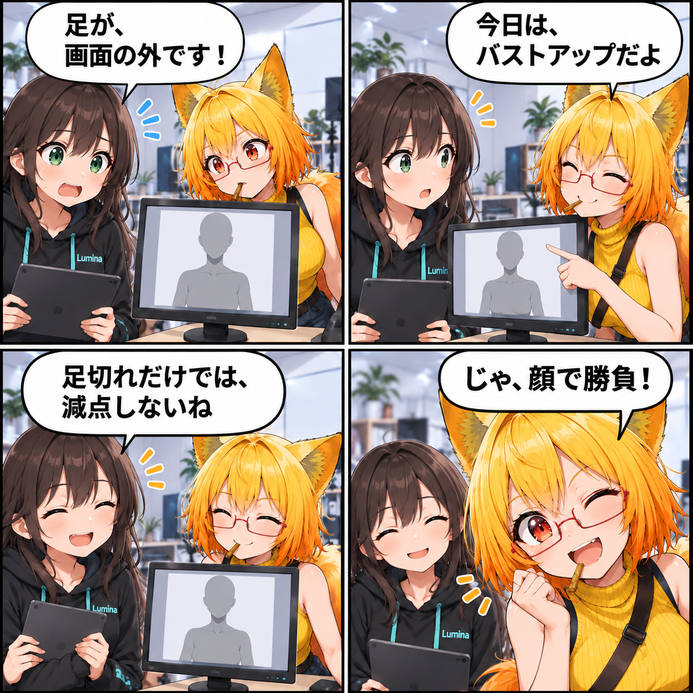

足切れを、失敗と決めつけない。AIの構図チェックを広げた日
AIへ撮影を頼むためのMCP操作に、画面内の位置や欠け、遮蔽物を調べる手がかりを加えました。バストアップなら足が写らないのは自然なこと。構図の意図を考えながら、次の調整を判断できるようにする変更です。

「画面からはみ出た」だけでは決められない
全身を撮るつもりなら、足先まで入っているかを確かめたい。一方、胸から上を写すバストアップでは、足が画面外にあるのが普通です。同じ「足が写っていない」という状態でも、撮りたい写真によって意味が変わります。
今回の主題は、AIが撮影を操作するときに、こうした違いを判断する材料を返せるようにしたことです。前回は仕様書段階として紹介したRuntime API／MCPに、期間内のコミットで操作コードと撮影支援が入りました。さらに、構図を観測する入口と返却情報を広げています。
操作を頼む入口に、確かめる入口も
MCPは、AI側からアプリの機能を呼び出すための窓口です。VRASの内部状態を直接書き換えさせるのではなく、アプリが用意した操作を通してアバターや撮影用カメラを扱います。
撮影では、カメラを動かした後に「主役はどこにいるか」「頭が欠けていないか」「何かに遮られていないか」を確かめる必要があります。新しい構図解析の入口は、画面上でアバターが占める範囲、中心からのずれ、頭や足の欠け、顔の位置に関する情報などを返します。操作した結果を確認して、次の調整へつなげるための材料です。
足切れの情報は残し、一律の減点には使わない
構図解析には、主役が画面に収まっているかを大まかに評価するスコアもあります。ただし、その共通スコアでは、足や体が切れていること自体を減点に使いません。バストアップや顔のアップまで、すべて全身写真の基準で評価してしまうのを避けるためです。
足が切れているかを示す情報は、結果から消していません。全身撮影を指示したAI側なら、その情報を見て撮り直しを判断できます。アプリが撮影意図を自動で理解する仕組みではなく、共通の評価と、撮影意図に応じた判断を分けた設計です。高いスコアだけで、希望どおりの写真と決まるわけでもありません。
遮られ方を調べるにも、得意不得意がある
今回追加した遮蔽物の確認は、カメラから顔・胸・腰などの代表点へ線を飛ばし、途中に衝突判定用の形状があるかを調べます。アバター自身やカメラ自身の形状を除き、調べた点のうち何点が遮られているかを返します。
これは画像を見て意味を理解する処理ではありません。透明な物体は見た目と判定が一致しないことがあり、衝突判定のない物体や、髪で目が隠れるような細かい見え方も、この結果だけでは確認できません。構図の数値を手がかりにしつつ、必要ならプレビュー画像でも確かめる、という使い方を想定しています。
技術的なポイント
camera.check_frameの返却情報を拡張し、同じ評価処理を呼ぶcamera.get_frame_analysisを追加しました。観測用ツールとして読取専用に登録しています。- 追加した主な情報は、画面内の矩形
subjectScreenRect、中心からのずれcenterOffset、遮蔽の目安physicsOcclusion、共通スコアsafeFrameScoreです。既存のheadClippedやfeetClippedも残ります。 - 共通スコアは、カメラ前方にいるか、顔の位置、頭の欠け、占有率、中心からのずれ、遮蔽を組み合わせます。意図的に下半身を切る構図を考慮し、足・体の欠けそのものは減点しません。
- 遮蔽の確認はPhysicsのRaycastを使う近似です。透明度や画像の意味を判定する機能とは分けています。
- 新しい観測ツールが登録され、読取専用・状態を変更しない操作として宣言されていることを確かめるテストコードも追加されました。
ほかにも進んだこと・補足
同じ観測機能の追加では、現在のアプリが対応する機能の取得、管理対象の一覧や範囲、床の高さや配置候補の照会、現在のHumanoidポーズの評価も入りました。いずれも、AIが操作前後の判断材料を得るための入口です。ポーズ評価も近似的な診断で、人体の安定性やすべての形状の交差を保証するものではありません。
期間内には、MCPによるポーズ・撮影操作と動画制作の基盤、VASでHumanoidの骨を動かすモーションも追加されています。また、VRメニューの表示数やアバターの選択判定、VR環境エフェクトのHMD適用に関する修正もありました。
この記事は集計終了時点のコミット済みソースと仕様書に基づきます。日記制作中にUnityの実行、実機確認、動画撮影や性能計測は行っていません。追加されたテストコードの内容と、この実行でテストが成功したことは区別しています。未コミットのシーンや撮影処理の変更も、今回の成果には含めていません。
4コマの裏話
今回の4コマは、「足が画面の外」と心配するルミナへ、ろひが「今日はバストアップ」と返す短い撮影寸劇です。足切れを一律の減点にしない設計を会話にして、最後はろひの「じゃ、顔で勝負！」で締めました。撮影意図によって同じ観測結果の意味が変わるところが題材です。
会話や表情、画面の見本は説明のための創作です。実際の撮影記録、アプリの画面そのもの、自動調整に成功した証拠として描いたものではありません。
まとめ
撮影を任せるには、動かせることに加えて、動かした結果を確かめる手段が必要です。今回は構図の観測情報を増やし、意図的な切り取りを一律の失敗にしない評価へ広げました。AIが目的に合う写真へ近づけるための、判断材料を整えた一日です。
本日のひとこと
写っていないことにも、ちゃんと意図がある。